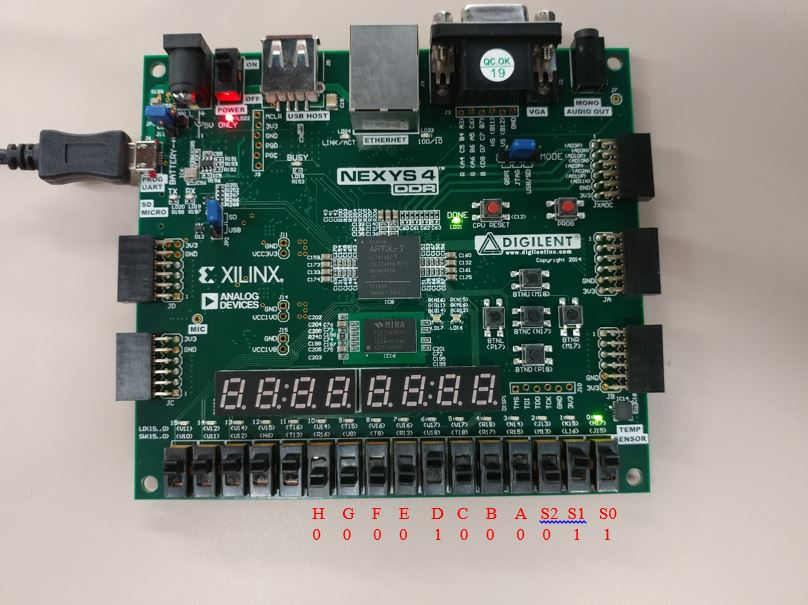

Introduction
This project consisted of designing an 8-to-1 multiplexer using 4-to-1 multiplexers and 2-to-1 multiplexers. The goal is to see how something can be made using smaller components in the case that there are limited resources.
All code is written in VHDL using Xilinx Vivaldo.
Specifications
The 8-to-1 multiplexer can only be built using 4-to-1 and 2-to-1 multiplexers that are also design individually. The 8-to-1 multiplex design is to then be implemented on the Xilinx Nexys 4 FPGA, with switches 0-2 acting as the select lines, switches 3-10 acting as the input lines, and a single green LED acting as the output.
Implementation and Working
A multiplexer has 2^n inputs, one output, and n select lines. The select lines are the ones that control which one of the inputs will be mapped to the output. For a 8-to-1 multiplexer there are eight inputs, one output, and three select lines. For a 4-to-1 multiplexer there are four inputs, one output, and 2 select lines. Finally, for a 2-to-1 multiplexer there are two inputs, one output, and 1 select line.
In order to meet the requirements of an 8-to-1 multiplexer, two 4-to-1 multiplexers were connected to a single 2-to-1 multiplexer. Half of the inputs would be mapped to the first 4-to-1 multiplexers while the other half are mapped to the second 4-to-1 multiplexer. This would act as the eight inputs for the 8-to-1 multiplexer. The outputs of the 4-to-1 multiplexers would then be mapped to the inputs of the 2-to-1 multiplexer, connecting the entire design together. Select lines S0 and S1 would be mapped to both of the 4-to-1 select lines, while select line S2 is mapped to the 2-to-1 multiplexer.
Photo 1: Circuit design of the 8-to-1 Multiplexer.
Let us say we want the third input, c, routed to the output of the 8-to-1 multiplexer. The values given to the select lines are “011”. Both 4-to-1 multiplexers would send their third input, c and g, to the 2-to-1 multiplexer since their select lines received the value “11”. The 2-to-1 multiplexer will then choose the first 4-to-1 multiplexers input since its select line received the value ‘0’, so input c would be the output.
8-to-1 Multiplexer File
This file will be the main file that connects all the smaller components together in order to build the 8-to-1 multiplexer. To start, the inputs and outputs used in the design had to first be defined. This was done in the entity, with S2, S1, S0, a, b, c, d, e, f, g, and h being defined as inputs and R being defined as an output. S0, S1, and S2 would serve as the 8-to-1 multiplexers select lines, with S2 receiving the most significant bit (MSB) and S0 receiving the least significant bit (LSM). Inputs a, b, c, d, e, f, g, and h would serve as the inputs for the 8-to-1 multiplexer. R would be the output.
entity mux8to1 is
Port ( S2,S1,S0 : IN STD_LOGIC; --inputs from the switches. Used for select in the MUX
a, b, c, d, e, f, g, h : IN STD_LOGIC; --inputs from the switches
R: OUT STD_LOGIC); --output
end mux8to1;
Next was building the 8-to-1 multiplexer using the smaller multiplexers. Components were defined for the 4-to-1 multiplexer and the 2-to-1 multiplexer.Temporary signals for the components would also be defined.
COMPONENT mux4to1 --the 4 to 1 MUX
port( A, B, C, D : IN STD_LOGIC;
S1, S0 : IN STD_LOGIC;
R : OUT STD_LOGIC);
END COMPONENT;
COMPONENT mux2to1 --the 4 to 1 MUX
port( A, B : IN STD_LOGIC;
S2 : IN STD_LOGIC;
R : OUT STD_LOGIC);
END COMPONENT;
signal ta,tb,tc,td,te,tf,tg,th,tS0,tS1,tS2 : STD_LOGIC;
signal temp1, temp2, temp3 : STD_LOGIC;
Moving onto the architecture, the inputs for the 8-to-1 multiplexer were mapped to the temporary signals that were just defined. These are to be used for moving data between the components.
ta <= a;
tb <= b;
tc <= c;
td <= d;
te <= e;
tf <= f;
tg <= g;
th <= h;
tS0 <= S0;
tS1 <= S1;
tS2 <= S2;
Through the use of port maps the components were able to be connected together, building the 8-to-1 multiplexer. The inputs for the 8-to-1 multiplexer were mapped to their respective 4-to-1 multiplexer, along with the select lines S0 and S1. The outputs of the 4-to-1 multiplexers would be stored in the signals temp1 and temp2. S2, temp1, and temp2 would then be mapped to the 2-to-1 multiplexer. The output of the 2-to-1 multiplexer would be stored in the signal temp3. The signal temp3 would then be set to the output R or the 8-to-1 multiplexer.
m1: mux4to1 port map(A => ta, B => tb, C => tc, D => td, S1 => tS1, S0 => tS0, R => temp1);
m2: mux4to1 port map(A => te, B => tf, C => tg, D => th, S1 => tS1, S0 => tS0, R => temp2);
m3: mux2to1 port map(A => temp1, B => temp2, S2 => tS2, R => temp3);
R <= temp3;
4-to-1 Multiplexer File
This file contained the design of the 4-to-1 multiplexer. The inputs and outputs for the 4-to-1 multiplexer are defined in a similar way to how the component was defined in the 8-to-1 multiplexer file.
entity mux4to1 is
Port ( A, B, C, D : in STD_LOGIC;
S1, S0 : in STD_LOGIC;
R : out STD_LOGIC);
end mux4to1;
Inside the architecture of the 4-to-1 multiplexer a process was used with all of its inputs in the sensitivity list of the process. This allowed the multiplexer to update the output if any of the inputs change values at any time. In order to know what input was to be routed to the output IF-THEN-ELSIF statements were used. These statements compared the values of the select lines in order to assign the correct output.
architecture Behavioral of mux4to1 is
begin
MUX4to1: PROCESS(A, B, C, D, S1, S0) IS --4 to 1 MUX
BEGIN
IF(S1 = '0' AND S0 = '0') THEN
R <= A;
ELSIF(S1 = '0' AND S0 = '1') THEN
R <= B;
ELSIF(S1 = '1' AND S0 = '0') THEN
R <= C;
ELSIF(S1 = '1' AND S0 = '1') THEN
R <= D;
END IF;
END PROCESS;
end Behavioral;
2-to-1 Multiplexer File
This file contained the design of the 2-to-1 multiplexer. The multiplexer was design in a similar fashion to the 4-to-1 multiplexer. The inputs and outputs for the 2-to-1 multiplexer were first defined.
entity mux2to1 is
Port ( A, B : in STD_LOGIC;
S2 : in STD_LOGIC;
R : out STD_LOGIC);
end mux2to1;
Inside the architecture of the 2-to-1 multiplexer are IF-THEN-ELSIF statements that were used to assign the correct output.
architecture Behavioral of mux2to1 is
begin
MUX2to1: PROCESS (A, B, S2) IS --2 to 1 MUX
BEGIN
IF(S2 = '0') THEN
R <= A;
ELSIF(S2 = '1') THEN
R <= B;
END IF;
END PROCESS;
end Behavioral;
Results
In one of the test the values given to the select lines were “011”, which meant we wanted the value from input D. If the value is routed to the output correctly then the green LED would turn on, and in this case it did.
Photo 2: First test of the 8-to-1 Multiplexer.
In another test the values given to the select lines were “101”, which meant we wanted the value from input F. Again, the green LED turned on.
Photo 3: Second test of the 8-to-1 Multiplexer.
This meant that the design for the 8-to-1 multiplexer was working exactly as intended.
Final Remarks
The design was straight forward for the most part. The only difficulty was ensuring the port maps were done correctly and the values were actually going through each of the components. Other than that the design worked as intended.